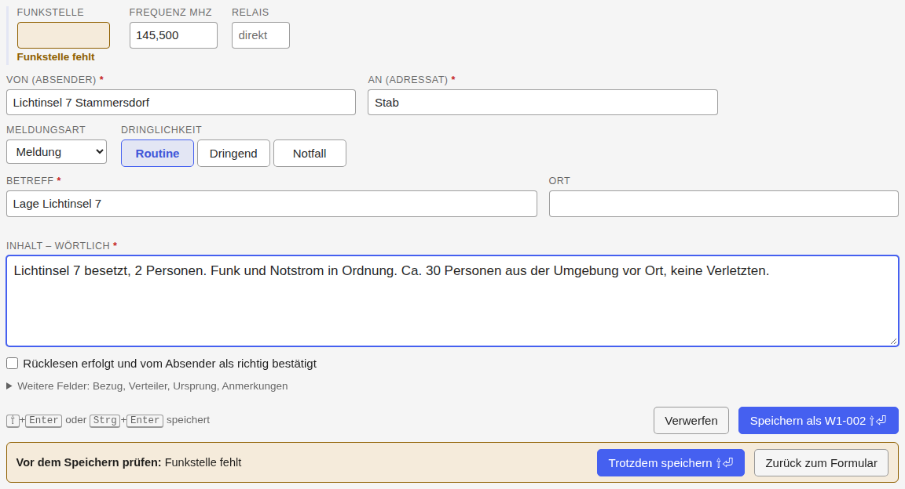

Eine Meldung aufnehmen
← Notfunk-Anleitung · Notfunk-Meldebuch öffnen
Das Formular steht im Meldebuch ganz oben. Die nächste Nummer wird angezeigt („→ W1-008“), aber erst beim Speichern vergeben.
Der Ablauf einer Meldung
- Wortlaut aufnehmen: den Inhalt wörtlich, wie übermittelt.
- Rücklesen (empfohlen, nicht zwingend): die Meldung dem Absender vorlesen bzw. von der Funkstelle zurücklesen lassen. Bestätigt er, setzen Sie das Häkchen „Rücklesen“; sonst lassen Sie es leer.
- Meldung sichern: Speichern vergibt die Notfunk-Nummer.
- Übergabe bzw. Übertragung eintragen: bei einer eingegangenen Meldung „übergeben“, bei einer ausgehenden „übertragen“, danach die Bestätigung.
- Referenz ergänzen: die Nummer, die die Meldesammelstelle zurückmeldet.
„Übergeben“ oder „übertragen“ heißt nie, dass ein Auftrag im Inhalt erledigt ist.

Jedes Feld ist im Bild beschriftet; die Farben zeigen, was zusammengehört. Wenn Sie die Meldung empfangen haben, wählen Sie „Eingang“; wenn Sie sie
weiterfunken, „Ausgang“. Zeiten und Daten geben Sie so ein, wie sie
angezeigt werden (2026-10-08, 14:05); 20261008 und 1405 gehen auch.
Alle Zeiten sind Ortszeit, in 24-Stunden-Schreibweise.
Pflichtfelder sind mit * markiert: Empfangen/Gesendet am, Von, An, Betreff und Inhalt. Fehlt eines, steht der Hinweis direkt am Feld, und der Cursor springt dorthin.
Unter „Weitere Felder“ stehen:
| Feld | Bedeutung | Beispiel |
|---|---|---|
| Bezug | Antwort, Korrektur oder Ergänzung zu einer anderen Meldung, mit deren Nummer | Antwort auf W1-003 |
| Verteiler | wer die Meldung noch bekommt | S3, S4 |
| Ursprungsstation | Station, bei der die Meldung ursprünglich aufgegeben wurde (bei Weitergaben) | OE3XYZ |
| Ursprungsort | Ort der ursprünglichen Aufgabe | Wolkersdorf |
| Aufgabezeit | wann die Meldung dort aufgegeben wurde (Uhrzeit) | 13:50 |
| Stichzeit | nur bei Lagemeldungen: auf welche Uhrzeit sich die Lage bezieht | 14:00 |
| Anmerkungen | eigene Notizen |
Wer ist wer
- Von / An sind Absender und Adressat der Meldung selbst, etwa „Pflegeheim Brünner Straße 68, Frau Huber“ an „Stab“.
- Die Funkstelle ist die Station, über die die Meldung kam oder an die sie geht. Bei Weitergaben ist das oft nicht die Ursprungsstation.
- Der Operator sind Sie: wer hier am Gerät aufnimmt.
Beim Tippen eines Rufzeichens schlägt das Meldebuch Rufzeichen aus der österreichischen Rufzeichenliste vor und zeigt Name und Ort darunter. Eigene Listen verwalten Sie unten auf der Seite unter „Rufzeichenlisten – verwalten…“; sie gelten für alle Werkzeuge auf diesem Gerät und sind nicht in der Sicherung enthalten.
Orte
- Ort: wo das Ereignis ist.
- Ursprungsort: wo die Meldung aufgegeben wurde.
- Standort der Station: wo Ihr Funkgerät steht; steht im Einsatz, nicht in der Meldung.
Die Ortssuche schlägt Wiener Adressen, Orte, Plätze und Haltestellen vor, für ganz Österreich Postleitzahlen, Gemeinden und Bezirke. Ein Vorschlag ergänzt Postleitzahl und Locator. Passt nichts, bleibt Ihr Text, wie er ist; der Inhalt der Meldung wird nie verändert.
„📍 Standort“ oben in der Kopfzeile öffnet die Standortsuche: Adresse, Ort, Koordinaten, Locator oder UTMREF eintippen und umrechnen lassen, ohne das Formular zu verlassen.
Zeiten
- Empfangen am / Gesendet am: wann die Meldung übermittelt wurde.
- Erfasst am: wann sie im Meldebuch gespeichert wurde (automatisch).
- Aufgabezeit: wann sie bei der Ursprungsstation aufgegeben wurde.
- Stichzeit: worauf sich eine Lagemeldung bezieht.
Nachtrag vom Papier: Tragen Sie das tatsächliche Datum und die Uhrzeit ein. Liegt die Zeit mehr als eine Stunde zurück, fragt das Formular beim Speichern nach.
Speichern, Hinweise, Verwerfen

- ⇧+Enter oder Strg+Enter (am Mac auch ⌘+Enter) speichert, aus jedem Feld.
- Fehlt nur etwas, das nicht zwingend ist (die Funkstelle), oder liegt die Zeit weit zurück oder in der Zukunft, erscheint „Vor dem Speichern prüfen“, und das Feld ist orange markiert. Noch einmal ⇧+Enter oder „Trotzdem speichern“ speichert.
- Esc schließt zuerst offene Vorschläge. Bei ausgefülltem Formular fragt es dann „Eingabe verwerfen?“; ein zweites Esc heißt „weiter erfassen“. Nach dem Verwerfen holt „Rückgängig“ alles zurück.
- Entwurf: Was Sie gerade tippen, wird laufend zwischengesichert („✓ Entwurf gesichert“) und ist auch nach einem Neuladen noch da. Ein Entwurf ist aber keine gespeicherte Meldung: Eine Nummer gibt es erst beim Speichern.
- Gespeichert heißt: Meldung und Nummer sind fertig abgelegt, und die Meldung erscheint im Meldebuch. Schlägt das Speichern fehl („SPEICHERN FEHLGESCHLAGEN“), ist nichts vergeben und Ihre Eingabe steht noch im Formular. Laden Sie dann sofort eine Sicherung herunter.
Arbeiten Sie an einem Einsatz nur in einem Fenster. Was passiert, wenn es doch zwei sind, steht unter Wenn etwas nicht klappt.
Dringlichkeit
| Stufe | Bedeutung (vorläufig) |
|---|---|
| Routine | alles, was in der normalen Reihenfolge bearbeitet wird |
| Dringend | vor Routine-Meldungen übermitteln und bearbeiten |
| Notfall | Gefahr für Leib und Leben oder unmittelbar drohender großer Schaden: sofort |
Weiter: Das Meldebuch